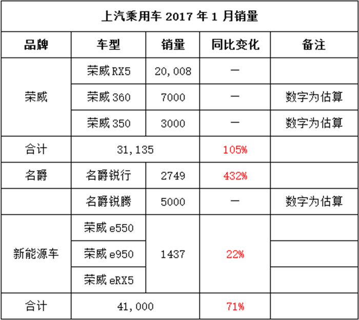

靠荣威RX5霸屏2016年汽车圈的上汽乘用车，显然打算在2017年继续上演“好戏”。2017年首月，上汽乘用车以月销4.1万辆、同比增长71%的表现开了个好头。
具体参考网摘：http://www.12365auto.com/news/20170208/269819.shtml
过去一年多的时间里，北汽自主品牌密集上市了绅宝X65、X25、X55和X35等一系列SUV车型。目前绅宝旗下的5款轿车和4款SUV基本完成了自主1.0所设定完善产品谱系的任务。在2016年年初，北汽开启了自主2.0时代。2.0时代的北汽自主品牌力图在家族化设计、自主研发水平以及生产制造工艺方面更上一层楼。
参考文摘：http://auto.sohu.com/20170119/n479092932.shtml
涂牛OTA:旅行社购买,组合包装,自己定价赚取差价。竞争点服务品质和产品定制,主推出境游;
携程/艺龙OAT:供应商机票,酒旅游产品放到平台销售,赚取佣金,核心机票+酒店预订;
同程的OTA:短线周边游,冷门业务,主做景区门票。
去哪儿OAT:搜索工具,靠流量和点击赚钱,搜索引擎怎么玩,他就怎么玩。
碎片化区域:驴妈妈:景区直销;马蜂窝:攻略点评。
BAT巨头旅游:门票,酒店,客栈,机票
巨头PriceLine:凭借客户定价，占有非常大的市值旅游行业发展新形势
度假旅游：快速增长细分市场，出境游火爆；
预定向移动端靠拢：创新应用卡位移动端垂直入口；
分享型经济：短租/拼车/当地导游协同消费品；
消费者需求升级：度假公寓/特色民宿，非标准住宿产品受认同；
酒店PMS：旅游产业链战略价值被重新认识（PMS：酒店管理系统也是一个不错的领域）。
在线：交通预定，住宿预定，度假预订，趋向于平稳。在线机票预定市场基本成熟，上游航空公司掌握主导权；
旅游行业：住宿是一个重点；住宿 = 标准住宿 + 非标准住宿逐步出现。
在线旅游与本地生活服务联通：在线旅游企业加强对目的地资源整合能力，旅游产品研发及组合方式上加大创新力度。
新趋势点：消费者与目的地本地生活服务商家的链接，线上预订目的地生活服务将为未来新的增长潜力点；
旅游行业是个一切围绕“人”的人气聚集的、复杂的行业，其涉及到的产业节点（包括组团、地接、票务和酒店预订、餐饮交通、导游服务等等）每一个都很复杂，绝非在线售卖酒店间夜和机票、门票那么简单。
互联网技术可以改变、改善旅游庞大产业链中的某个流程和环节，但归根结底，景区景点的优美风光、人与人之间在旅游时的情感交流，住宿、餐饮、购物时得到的便捷与舒适服务，享受人生的愉悦心情，才是旅游体验的根本。而这些体验，都要依靠线下企业的服务来支持，绝不是在线旅游企业可以通过互联网技术手段就能为旅游者实现的。即“线上线下旅游必然趋于融合”。
一、机票，在线渗透率60%；
二、酒店，在线渗透率40%；
三、休闲游，今年市场份额4000亿元，在线渗透率只有10%。
四、住宿，国内各大城市宾馆入住率平均不到57%，加上国内信息宾馆业信息化水平不高，这个领域也有很大的创新空间。
五、旅游行业缺少对旅游当地资源的整合，缺少对旅游者的旅游体验的关注。自由团体，关注偏少。